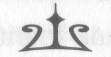

BÖLÜM ON DOKUZ
TANRILAR BİZİ NASIL
ÖLDÜRECEKLERİNİ OYLUYORLAR
Poseidon'un oğlu için uçmanın kötü olması yetmezmiş gibi, doğruca gök gürültüsü ve şimşeklerin etrafında dans ettiği Zeus'un sarayına doğru uçuyordum ki bu hayli kötüydü.
Manhattan'm tam ortasında, havada, Olimpos Dağı'nın yörüngesinde bir çember çizdik. Buraya daha önce bir kez gelmiştim, asansörle Empire State Binası'nın gizli altı yüzüncü katına çıkmıştım. Olimpos beni daha önce o kadar hayrete düşürmüşken, nasıl oluyorsa artık, bu kez daha da hayretler içerisindeydim.
Sabahın alacakaranlığında, meşaleler ve ateşler dağın yamacındaki sarayları kan kırmızısından çivit maviye, yirmi ayrı renkte parıldatıyordu. Belli ki Olimpos'ta kimse uyumu-yordu. Dolambaçlı sokaklar yarı-tanrılar, doğa ruhları ve ufak tanrıcıklarla doluydu; at arabalarına yahut kiklopların taşıdığı tahtırevanlara binmişlerdi. Sanki kış burada yoktu.
Çiçeklerinin hepsi açılmış bahçelerin kokusu çalındı burnuma, güller ve daha da tatlı kokulu ak nağmeleri, flütlerin müziği yükseliyordu.
Dağın tepesinde sarayların en büyüğü yükseliyordu: Tanrıların ışıldayan beyaz salonu.
Pegasuslarımız bizi dış avlunun içine, devasa gümüş
kapıların önüne indirdi. Kapıya vurmak aklıma gelmeden 278
NymphE
önce, kapılar kendiliğinden açıldı.
İyi şanslar patron, dedi Kara Korsan.
"Evet." Neden bilmiyordum ama içime sonumun geldiği hissi dolmuştu. Daha önce tanrıların tümünü bir arada görmemiştim. İçlerinden herhangi birisinin beni toza çevirebileceğini, birkaçının da bunu gönlünden geçirdiğini biliyordum.
Hey, geri dönmezsen, senin kulübeni ahır yapsam olur mu? Pegasusa baküm.
Aklımdan geçiverdi işte, dedi. Özür dilerim.
Kara Korsan ve arkadaşları uçup gittiler; Thalia, Annabeth ve ben yalnız kaldık. Bir süreliğine öylece saraya bakıp durduk, tıpkı Westover Kışlası'nın önünde beraberce durdu-
ğumuz gibi; tek fark aradan milyonlarca yıl geçmiş gibiydi.
Ve sonra, yan yana taht odasına ilerledik.
On iki muazzam taht, ortadaki ocağın etrafına üpkı kamptaki kulübeler gibi bir U şeklinde dizilmişti. Tavan takımyıldızlarla süslüydü; en yeni takımyıldız da oradaydı. Yayını ger-miş avcı Zoe gökte ilerliyordu.
Tahtların tümü doluydu. Her bir tanrı ve tanrıça yaklaşık üç buçuk metre boyundaydı. Ve inanın, bir düzine süper büyük varlık gözlerini size dikti mi... Eh, buna kıyasla canavarlarla mücadele piknik yapmaya benziyor.
"Hoş geldiniz kahramanlar," dedi Artemis.
"Mööööö!"
İşte o an Bessie ve Kıvırcık'ı gördüm.
Ortadaki ocağın ateşinin yanında havada asılı duran bir su küresi vardı. Bessie su küresinin içinde keyifle yüzü-
yordu, yılan kuyruğunu savuruyor ve başını kürenin yanlarından, altından çıkarıyordu. Sihirli bir baloncukta yüzmenin tadını çıkarıyor gibiydi. Kıvırcık, Zeus'un tahünın 279
NymphE
yanında diz çökmüştü, sanki rapor veriyor gibiydi. Ama bizi görünce dayanamadı, bağırdı: "İyi ki buradasınız!"
Bana doğru koşmaya başladı, sonra sırtını Zeus'a dönü-
ğünü fark etti ve izin ister gibi baktı.
"Git bakalım," dedi Zeus. Ama aslında Kıvırcık'la ilgi-lenmiyordu. Gök Tanrısı'nın gözleri dikkatle Thalia'yı süzüyordu.
Kıvırcık hızla koşturarak yanımıza geldi. Tanrıların hiç-
biri konuşmuyordu. Kıvırcık'ın toynaklarının tak tuk sesleri mermer zeminde yankılanıyordu. Bessie su küresinden sular sıçratıyordu. Ocaktaki ateş çatırdıyordu.
Endişeyle babam Poseidon'a baktım. Onu en son gördü-
ğüm zamanki gibi giyinmişti: plajda giyilen türden bir şort, Hawaii gömleği ve sandaletler. Kırışmış, güneşte yanmış, kara sakalı ve derin yeşil gözleri vardı. Beni tekrar görünce neler hissettiğini bilmiyordum ama gözlerinin kenarındaki kırışıklar gülümser gibiydi. Başını salladı, sanki "tamam" der gibiydi.
Kıvırcık, Annabeth'i ve Thalia'yı sıkı sıkı kucakladı. Sonra kollarımı kavradı. "Percy, Bessie ile ben buraya gelebildik!
Ama onları ikna etmeniz gerek! Yapamıyorlar!"
"Neyi yapamıyorlar?" diye sordum.
"Kahramanlar," diye seslendi Artemis.
Tanrıça tahtından kayarak indi ve insan boyutuna geldi.
Dev Olimposluların arasında olmaktan hiç rahatsızlık duy-mayan, kumral saçlı ufak bir kız çocuğu oldu. Gümüş
cüppesinden parıltılar saçarak bize doğru yürüdü. Yüzünde hiçbir duygu ifadesi yoktu. Sanki her adımında üstüne vuran bir ay ışığı sütunu da onunla beraber yürüyordu.
"Konsey yaptığınız işlerden haberdar edildi," dedi bize Artemis. "Othyrs Dağı'nın batıda yükselmeye başladığını 280
NymphE
biliyorlar. Atlas'ın kaçmak için yaptıklarını ve Kronos'un büyüyen ordusunu biliyorlar. Oylama yapük ve harekete geçmeye karar verdik."
Tanrılar arasından fısıldaşmalar, kıpırdanmalar belirdi; sanki bu plandan hepsi hoşnut değildi ama kimse itiraz etmedi.
"Tanrım Zeus'un emriyle," dedi Artemis, "kardeşim Apollon ve ben en güçlü canavarları avlayacağız. Titanların davasına katılmadan önce onlara saldıracağız. Tanrıça Athena diğer titanların hapsoldukları çeşitli yerleri bizzat inceleyecek ve kaçmamalarını sağlayacak. Tanrı Poseidon'a da yolcu gemisi Prenses Andromeda'ya tüm öfkesini saçarak onu denizin dibine yollama izni verildi. Ve sıra sizlere gelince, kahramanlarım..."
Yüzünü diğer ölümsüzlere çevirdi. "Bu melezlerin Olimpos'a büyük hizmetleri dokundu. Burada kim bunu inkar edecek?"
Etrafındaki konseye toplanmış tanrıların yüzüne teker teker baktı. Koyu renk çizgili takım elbiseli, kara sakalı özenle inceltilmiş Zeus'un gözlerinden çatirdayarak enerji fışkırı-
yordu. Yanında örülmüş gümüş saçları bir omzuna düşen, güzeller güzeli bir kadın vardı. Kadının üstünde tavus kuşu tüyleri deseninde, rengarenk bir elbise vardı. Tanrıça Hera.
Zeus'un sağında babam Poseidon duruyordu. Onun yanında ise bir bacağı çelik destek içerisinde, kafası yamru yumru, çalı gibi kahverengi sakalı olan, sakallarının ucundan da alevler parıldayan, devasa bir patates çuvalı gibi bir adam vardı: Demirhane Tanrısı, Hephaistos.
Hermes bana göz kırptı. Bugün iş adamları gibi takım elbise giymişti, bir yandan Merkür'ün asası şeklindeki cep telefonuna gelen mesajlara bakıyordu. Apollon güneş göz-281
NymphE
lüğü takmıştı, altın tahtında öne eğildi. Ipod'unun kulaklıkları kulaklarında olduğundan, konuşulanları dinlediğinden bile emin değildim ama baş parmaklarını kaldırarak aferin çekti bana. Dionisos sıkılmış gibiydi, parmaklarının arasında bir üzüm salkımı dolandırıyordu. Ve Ares de, eh, o da krom ve deri kaplı tahtında, bir yandan bir bıçak bilerken, bir yandan da bana gözleriyle ateş püskürüyordu.
Taht odasının bayanlar köşesinde, Hera'nın yanında ise yeşil cüppeler içerisinde kara saçlı bir tanrıça vardı. Elma dallarından örülmüş bir tahtta oturuyordu. Bu Ekin Tanrıçası Demeter'di. Onun yanında ise zarif beyaz bir elbise içerisinde, güzel, gri gözlü bir kadın vardı. Bu yalnızca Annabeth'in annesi, Athena olabilirdi. Onun yanındaysa Afrodit vardı, bana bilmiş
bilmiş bakınca kendimi tutamadım, utançtan kızardım.
Tüm Olimposlular tek bir yerde toplanmıştı. Bu odada o kadar kudret vardı ki sarayın tümden patlamaması tam bir mucizeydi.
"Şunu demeden duramayacağım," diyerek Apollon sessizliği bozdu, "bu çocuklar iyi iş çıkarttı." Boğazını temizleyip şiir okumaya başladı: "Siz kahramanlar, başınızda defne yapraklı taçlarınız..."
"Evet, birinci sınıf işti," diyerek Hermes araya girdi, sanı-
rım Apollon'un şiir okumasına engel olmak için konuşmaya karar vermişti. "Herkes onları atomlarına ayırmama konusunda aynı fikirde mi?"
Çekinceli birkaç el kalktı: Demeter, Afrodit.
"Bir dakika durun!" diye kükreyerek lafa girdi Ares.
Thalia'ya ve bana parmağıyla işaret etti. "Bu ikisi tehlikeli.
Onları buracıkta halledersek daha güvenli olacak..."
"Ares," diyerek araya girdi Poseidon, "bunlar hakiki kahramanlar. Oğlumu parçalara ayırmayacağız."